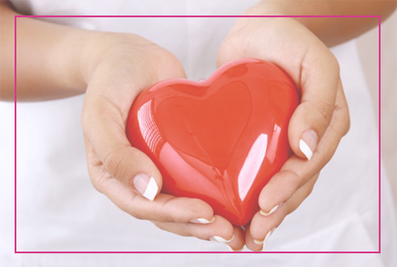

При беременности

Лимонтар принимают в качестве средства для повышения неспецифической реактивности организма беременной женщины, улучшение адаптационных и компенсаторно-защитных возможностей в целях профилактики осложнений при гипоксии и гипотрофии плода, при невынашивании беременности

активация функций органов
Лимонтар активирует физиологичексие функции органов и тканей, тем самым улучшает адаптационные и компенсаторно-защитные возможности организма; усиливает секрецию желудочного сока и соляной кислоты; повышает аппетит и усиливает сократительную функцию поперечно-полосатой мускулатуры